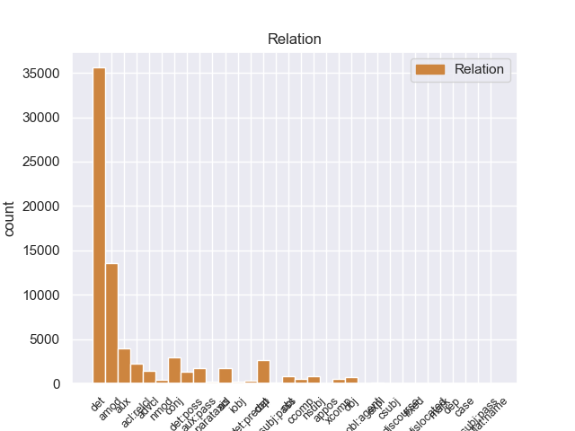
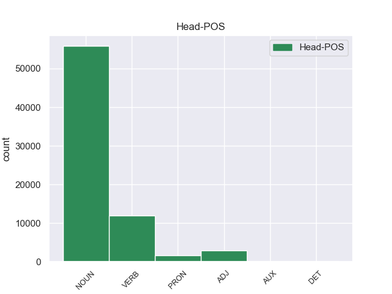
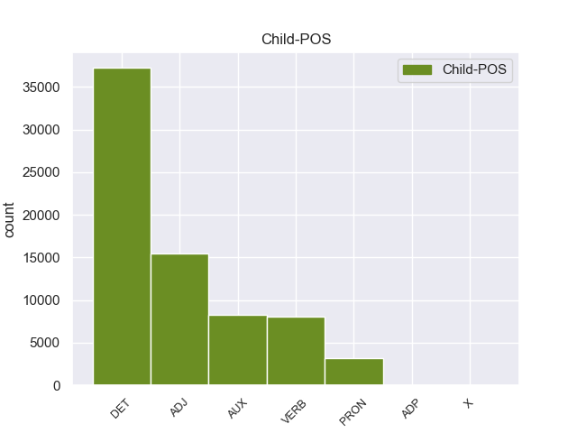

Distribution of features within this leaf



Agreement Rules sorted by frequency.
When the head token is NOUN and the dependent token is DET.
1 Mohammad _ _ _ _ 0 _ _ _
2 Khatami _ _ _ _ 0 _ _ _
3 , _ _ _ _ 0 _ _ _
4 il _ _ _ _ 0 _ _ _
5 presidente _ _ _ _ 0 _ _ _
6 di _ _ _ _ 0 _ _ _
7 l’ _ _ _ _ 0 _ _ _
8 Iran _ _ _ _ 0 _ _ _
9 , _ _ _ _ 0 _ _ _
10 si _ _ _ _ 0 _ _ _
11 è _ _ _ _ 0 _ _ _
12 impegnato _ _ _ _ 0 _ _ _
13 a _ _ _ _ 0 _ _ _
14 ricostruire _ _ _ _ 0 _ _ _
15 il il DET RD Definite=Def|Gender=Masc|Number=Sing|PronType=Art 16 det 16:det _
16 centro centro NOUN S Gender=Masc|Number=Sing 0 _ _ _
17 di _ _ _ _ 0 _ _ _
18 la _ _ _ _ 0 _ _ _
19 città _ _ _ _ 0 _ _ _
20 di _ _ _ _ 0 _ _ _
21 Bam _ _ _ _ 0 _ _ _
22 entro _ _ _ _ 0 _ _ _
23 2 _ _ _ _ 0 _ _ _
24 anni _ _ _ _ 0 _ _ _
25 . _ _ _ _ 0 _ _ _
When the head token is NOUN and the dependent token is ADJ.
1 Gli _ _ _ _ 0 _ _ _
2 edifici _ _ _ _ 0 _ _ _
3 di _ _ _ _ 0 _ _ _
4 il _ _ _ _ 0 _ _ _
5 centro _ _ _ _ 0 _ _ _
6 storico _ _ _ _ 0 _ _ _
7 erano _ _ _ _ 0 _ _ _
8 costruiti _ _ _ _ 0 _ _ _
9 con _ _ _ _ 0 _ _ _
10 l’ _ _ _ _ 0 _ _ _
11 argilla _ _ _ _ 0 _ _ _
12 rossa _ _ _ _ 0 _ _ _
13 di _ _ _ _ 0 _ _ _
14 il _ _ _ _ 0 _ _ _
15 deserto _ _ _ _ 0 _ _ _
16 , _ _ _ _ 0 _ _ _
17 un _ _ _ _ 0 _ _ _
18 materiale materiale NOUN S Gender=Masc|Number=Sing 0 _ _ _
19 molto _ _ _ _ 0 _ _ _
20 fragile fragile ADJ A Number=Sing 18 amod 18:amod SpaceAfter=No
21 . _ _ _ _ 0 _ _ _
When the head token is VERB and the dependent token is AUX.
1 Mohammad _ _ _ _ 0 _ _ _
2 Khatami _ _ _ _ 0 _ _ _
3 , _ _ _ _ 0 _ _ _
4 il _ _ _ _ 0 _ _ _
5 presidente _ _ _ _ 0 _ _ _
6 di _ _ _ _ 0 _ _ _
7 l’ _ _ _ _ 0 _ _ _
8 Iran _ _ _ _ 0 _ _ _
9 , _ _ _ _ 0 _ _ _
10 si _ _ _ _ 0 _ _ _
11 è essere AUX VA Mood=Ind|Number=Sing|Person=3|Tense=Pres|VerbForm=Fin 12 aux 12:aux _
12 impegnato impegnare VERB V Gender=Masc|Number=Sing|Tense=Past|VerbForm=Part 0 _ _ _
13 a _ _ _ _ 0 _ _ _
14 ricostruire _ _ _ _ 0 _ _ _
15 il _ _ _ _ 0 _ _ _
16 centro _ _ _ _ 0 _ _ _
17 di _ _ _ _ 0 _ _ _
18 la _ _ _ _ 0 _ _ _
19 città _ _ _ _ 0 _ _ _
20 di _ _ _ _ 0 _ _ _
21 Bam _ _ _ _ 0 _ _ _
22 entro _ _ _ _ 0 _ _ _
23 2 _ _ _ _ 0 _ _ _
24 anni _ _ _ _ 0 _ _ _
25 . _ _ _ _ 0 _ _ _
When the head token is NOUN and the dependent token is VERB.
1 Su _ _ _ _ 0 _ _ _
2 le _ _ _ _ 0 _ _ _
3 barche _ _ _ _ 0 _ _ _
4 i _ _ _ _ 0 _ _ _
5 turisti _ _ _ _ 0 _ _ _
6 possono _ _ _ _ 0 _ _ _
7 ascoltare _ _ _ _ 0 _ _ _
8 la _ _ _ _ 0 _ _ _
9 descrizione _ _ _ _ 0 _ _ _
10 e _ _ _ _ 0 _ _ _
11 la _ _ _ _ 0 _ _ _
12 storia _ _ _ _ 0 _ _ _
13 di _ _ _ _ 0 _ _ _
14 i _ _ _ _ 0 _ _ _
15 monumenti monumento NOUN S Gender=Masc|Number=Plur 0 _ _ _
16 che _ _ _ _ 0 _ _ _
17 si _ _ _ _ 0 _ _ _
18 vedono vedere VERB V Mood=Ind|Number=Plur|Person=3|Tense=Pres|VerbForm=Fin 15 acl:relcl 15:acl:relcl _
19 da _ _ _ _ 0 _ _ _
20 il _ _ _ _ 0 _ _ _
21 fiume _ _ _ _ 0 _ _ _
22 . _ _ _ _ 0 _ _ _
When the head token is VERB and the dependent token is VERB.
1 Quando _ _ _ _ 0 _ _ _
2 il _ _ _ _ 0 _ _ _
3 terremoto _ _ _ _ 0 _ _ _
4 è _ _ _ _ 0 _ _ _
5 forte _ _ _ _ 0 _ _ _
6 , _ _ _ _ 0 _ _ _
7 si _ _ _ _ 0 _ _ _
8 rovinano rovinare VERB V Mood=Ind|Number=Plur|Person=3|Tense=Pres|VerbForm=Fin 0 _ _ _
9 o _ _ _ _ 0 _ _ _
10 crollano crollare VERB V Mood=Ind|Number=Plur|Person=3|Tense=Pres|VerbForm=Fin 8 conj 8:conj:o _
11 anche _ _ _ _ 0 _ _ _
12 le _ _ _ _ 0 _ _ _
13 case _ _ _ _ 0 _ _ _
14 e _ _ _ _ 0 _ _ _
15 i _ _ _ _ 0 _ _ _
16 palazzi _ _ _ _ 0 _ _ _
17 . _ _ _ _ 0 _ _ _
When the head token is VERB and the dependent token is PRON.
1 Questo _ _ _ _ 0 _ _ _
2 tipo _ _ _ _ 0 _ _ _
3 di _ _ _ _ 0 _ _ _
4 riso _ _ _ _ 0 _ _ _
5 è _ _ _ _ 0 _ _ _
6 indicato indicare VERB V Gender=Masc|Number=Sing|Tense=Past|VerbForm=Part 0 _ _ _
7 per _ _ _ _ 0 _ _ _
8 chi chi PRON PR Number=Sing|PronType=Rel 6 obl 6:obl:per _
9 ha _ _ _ _ 0 _ _ _
10 disturbi _ _ _ _ 0 _ _ _
11 di _ _ _ _ 0 _ _ _
12 digestione _ _ _ _ 0 _ _ _
13 , _ _ _ _ 0 _ _ _
14 per _ _ _ _ 0 _ _ _
15 gli _ _ _ _ 0 _ _ _
16 anziani _ _ _ _ 0 _ _ _
17 e _ _ _ _ 0 _ _ _
18 i _ _ _ _ 0 _ _ _
19 bambini _ _ _ _ 0 _ _ _
20 . _ _ _ _ 0 _ _ _
When the head token is ADJ and the dependent token is AUX.
1 Quando _ _ _ _ 0 _ _ _
2 il _ _ _ _ 0 _ _ _
3 terremoto _ _ _ _ 0 _ _ _
4 è essere AUX V Mood=Ind|Number=Sing|Person=3|Tense=Pres|VerbForm=Fin 5 cop 5:cop _
5 forte forte ADJ A Number=Sing 0 _ _ _
6 , _ _ _ _ 0 _ _ _
7 si _ _ _ _ 0 _ _ _
8 rovinano _ _ _ _ 0 _ _ _
9 o _ _ _ _ 0 _ _ _
10 crollano _ _ _ _ 0 _ _ _
11 anche _ _ _ _ 0 _ _ _
12 le _ _ _ _ 0 _ _ _
13 case _ _ _ _ 0 _ _ _
14 e _ _ _ _ 0 _ _ _
15 i _ _ _ _ 0 _ _ _
16 palazzi _ _ _ _ 0 _ _ _
17 . _ _ _ _ 0 _ _ _
When the head token is NOUN and the dependent token is AUX.
1 Il _ _ _ _ 0 _ _ _
2 centro _ _ _ _ 0 _ _ _
3 storico _ _ _ _ 0 _ _ _
4 era _ _ _ _ 0 _ _ _
5 la _ _ _ _ 0 _ _ _
6 parte _ _ _ _ 0 _ _ _
7 più _ _ _ _ 0 _ _ _
8 antica _ _ _ _ 0 _ _ _
9 di _ _ _ _ 0 _ _ _
10 Bam _ _ _ _ 0 _ _ _
11 che _ _ _ _ 0 _ _ _
12 era essere AUX V Mood=Ind|Number=Sing|Person=3|Tense=Imp|VerbForm=Fin 13 cop 13:cop _
13 patrimonio patrimonio NOUN S Gender=Masc|Number=Sing 0 _ _ _
14 artistico _ _ _ _ 0 _ _ _
15 di _ _ _ _ 0 _ _ _
16 tutta _ _ _ _ 0 _ _ _
17 l’ _ _ _ _ 0 _ _ _
18 umanità _ _ _ _ 0 _ _ _
19 . _ _ _ _ 0 _ _ _
When the head token is ADJ and the dependent token is ADJ.
1 La _ _ _ _ 0 _ _ _
2 Costituzione _ _ _ _ 0 _ _ _
3 italiana _ _ _ _ 0 _ _ _
4 prevede _ _ _ _ 0 _ _ _
5 4 _ _ _ _ 0 _ _ _
6 tipi _ _ _ _ 0 _ _ _
7 di _ _ _ _ 0 _ _ _
8 referendum _ _ _ _ 0 _ _ _
9 : _ _ _ _ 0 _ _ _
10 abrogativo abrogativo ADJ A Gender=Masc|Number=Sing 0 _ _ _
11 , _ _ _ _ 0 _ _ _
12 territoriale _ _ _ _ 0 _ _ _
13 , _ _ _ _ 0 _ _ _
14 consultivo _ _ _ _ 0 _ _ _
15 e _ _ _ _ 0 _ _ _
16 costituzionale costituzionale ADJ A Number=Sing 10 conj 6:amod|10:conj:e SpaceAfter=No
17 . _ _ _ _ 0 _ _ _
When the head token is VERB and the dependent token is ADJ.
1 Se _ _ _ _ 0 _ _ _
2 il _ _ _ _ 0 _ _ _
3 terremoto _ _ _ _ 0 _ _ _
4 è _ _ _ _ 0 _ _ _
5 molto _ _ _ _ 0 _ _ _
6 forte forte ADJ A Number=Sing 11 advcl 11:advcl:se SpaceAfter=No
7 , _ _ _ _ 0 _ _ _
8 la _ _ _ _ 0 _ _ _
9 terra _ _ _ _ 0 _ _ _
10 si _ _ _ _ 0 _ _ _
11 muove muovere VERB V Mood=Ind|Number=Sing|Person=3|Tense=Pres|VerbForm=Fin 0 _ _ _
12 molto _ _ _ _ 0 _ _ _
13 e _ _ _ _ 0 _ _ _
14 in _ _ _ _ 0 _ _ _
15 fretta _ _ _ _ 0 _ _ _
16 . _ _ _ _ 0 _ _ _
When the head token is PRON and the dependent token is AUX.
1 La _ _ _ _ 0 _ _ _
2 capitale _ _ _ _ 0 _ _ _
3 di _ _ _ _ 0 _ _ _
4 Haiti _ _ _ _ 0 _ _ _
5 è _ _ _ _ 0 _ _ _
6 Port-au-Prince _ _ _ _ 0 _ _ _
7 Haiti _ _ _ _ 0 _ _ _
8 è essere AUX V Mood=Ind|Number=Sing|Person=3|Tense=Pres|VerbForm=Fin 9 cop 9:cop _
9 uno uno PRON PI Gender=Masc|Number=Sing|PronType=Ind 0 _ _ _
10 di _ _ _ _ 0 _ _ _
11 i _ _ _ _ 0 _ _ _
12 paesi _ _ _ _ 0 _ _ _
13 più _ _ _ _ 0 _ _ _
14 poveri _ _ _ _ 0 _ _ _
15 di _ _ _ _ 0 _ _ _
16 il _ _ _ _ 0 _ _ _
17 mondo _ _ _ _ 0 _ _ _
18 : _ _ _ _ 0 _ _ _
When the head token is NOUN and the dependent token is PRON.
1 Perciò _ _ _ _ 0 _ _ _
2 , _ _ _ _ 0 _ _ _
3 tutti _ _ _ _ 0 _ _ _
4 i _ _ _ _ 0 _ _ _
5 Paesi paese NOUN S Gender=Masc|Number=Plur 0 _ _ _
6 di _ _ _ _ 0 _ _ _
7 il _ _ _ _ 0 _ _ _
8 mondo _ _ _ _ 0 _ _ _
9 , _ _ _ _ 0 _ _ _
10 specialmente _ _ _ _ 0 _ _ _
11 quelli quello PRON PD Gender=Masc|Number=Plur|PronType=Dem 5 nmod 5:nmod _
12 più _ _ _ _ 0 _ _ _
13 ricchi _ _ _ _ 0 _ _ _
14 , _ _ _ _ 0 _ _ _
15 devono _ _ _ _ 0 _ _ _
16 impegnar _ _ _ _ 0 _ _ _
17 si _ _ _ _ 0 _ _ _
18 di _ _ _ _ 0 _ _ _
19 più _ _ _ _ 0 _ _ _
20 per _ _ _ _ 0 _ _ _
21 migliorare _ _ _ _ 0 _ _ _
22 le _ _ _ _ 0 _ _ _
23 condizioni _ _ _ _ 0 _ _ _
24 di _ _ _ _ 0 _ _ _
25 vita _ _ _ _ 0 _ _ _
26 di _ _ _ _ 0 _ _ _
27 tutti _ _ _ _ 0 _ _ _
28 i _ _ _ _ 0 _ _ _
29 bambini _ _ _ _ 0 _ _ _
30 . _ _ _ _ 0 _ _ _
When the head token is PRON and the dependent token is DET.
1 Referendum _ _ _ _ 0 _ _ _
2 è _ _ _ _ 0 _ _ _
3 una _ _ _ _ 0 _ _ _
4 parola _ _ _ _ 0 _ _ _
5 latina _ _ _ _ 0 _ _ _
6 e _ _ _ _ 0 _ _ _
7 indica _ _ _ _ 0 _ _ _
8 la _ _ _ _ 0 _ _ _
9 votazione _ _ _ _ 0 _ _ _
10 con _ _ _ _ 0 _ _ _
11 la il DET RD Definite=Def|Gender=Fem|Number=Sing|PronType=Art 12 det 12:det _
12 quale quale PRON PR Number=Sing|PronType=Rel 0 _ _ _
13 tutti _ _ _ _ 0 _ _ _
14 i _ _ _ _ 0 _ _ _
15 cittadini _ _ _ _ 0 _ _ _
16 decidono _ _ _ _ 0 _ _ _
17 direttamente _ _ _ _ 0 _ _ _
18 qualcosa _ _ _ _ 0 _ _ _
19 . _ _ _ _ 0 _ _ _
When the head token is PRON and the dependent token is VERB.
1 Questo _ _ _ _ 0 _ _ _
2 tipo _ _ _ _ 0 _ _ _
3 di _ _ _ _ 0 _ _ _
4 riso _ _ _ _ 0 _ _ _
5 è _ _ _ _ 0 _ _ _
6 indicato _ _ _ _ 0 _ _ _
7 per _ _ _ _ 0 _ _ _
8 chi chi PRON PR Number=Sing|PronType=Rel 0 _ _ _
9 ha avere VERB V Mood=Ind|Number=Sing|Person=3|Tense=Pres|VerbForm=Fin 8 acl:relcl 8:acl:relcl _
10 disturbi _ _ _ _ 0 _ _ _
11 di _ _ _ _ 0 _ _ _
12 digestione _ _ _ _ 0 _ _ _
13 , _ _ _ _ 0 _ _ _
14 per _ _ _ _ 0 _ _ _
15 gli _ _ _ _ 0 _ _ _
16 anziani _ _ _ _ 0 _ _ _
17 e _ _ _ _ 0 _ _ _
18 i _ _ _ _ 0 _ _ _
19 bambini _ _ _ _ 0 _ _ _
20 . _ _ _ _ 0 _ _ _
When the head token is ADJ and the dependent token is VERB.
1 E' _ _ _ _ 0 _ _ _
2 utile utile ADJ A Number=Sing 0 _ _ _
3 in _ _ _ _ 0 _ _ _
4 le _ _ _ _ 0 _ _ _
5 diete _ _ _ _ 0 _ _ _
6 dimagranti _ _ _ _ 0 _ _ _
7 perché _ _ _ _ 0 _ _ _
8 toglie togliere VERB V Mood=Ind|Number=Sing|Person=3|Tense=Pres|VerbForm=Fin 2 advcl 2:advcl:perché _
9 la _ _ _ _ 0 _ _ _
10 fame _ _ _ _ 0 _ _ _
11 ed _ _ _ _ 0 _ _ _
12 è _ _ _ _ 0 _ _ _
13 leggero _ _ _ _ 0 _ _ _
14 . _ _ _ _ 0 _ _ _
When the head token is ADJ and the dependent token is DET.
1 Ora _ _ _ _ 0 _ _ _
2 , _ _ _ _ 0 _ _ _
3 le _ _ _ _ 0 _ _ _
4 squadre _ _ _ _ 0 _ _ _
5 automobilistiche _ _ _ _ 0 _ _ _
6 devono _ _ _ _ 0 _ _ _
7 costruire _ _ _ _ 0 _ _ _
8 e _ _ _ _ 0 _ _ _
9 usare _ _ _ _ 0 _ _ _
10 un _ _ _ _ 0 _ _ _
11 solo _ _ _ _ 0 _ _ _
12 motore _ _ _ _ 0 _ _ _
13 , _ _ _ _ 0 _ _ _
14 che _ _ _ _ 0 _ _ _
15 deve _ _ _ _ 0 _ _ _
16 essere _ _ _ _ 0 _ _ _
17 lo lo DET RD Definite=Def|Gender=Masc|Number=Sing|PronType=Art 18 det 18:det _
18 stesso stesso ADJ A Gender=Masc|Number=Sing 0 _ _ _
19 per _ _ _ _ 0 _ _ _
20 il _ _ _ _ 0 _ _ _
21 giro _ _ _ _ 0 _ _ _
22 di _ _ _ _ 0 _ _ _
23 qualifica _ _ _ _ 0 _ _ _
24 e _ _ _ _ 0 _ _ _
25 per _ _ _ _ 0 _ _ _
26 la _ _ _ _ 0 _ _ _
27 gara _ _ _ _ 0 _ _ _
28 . _ _ _ _ 0 _ _ _
When the head token is ADJ and the dependent token is PRON.
1 Le _ _ _ _ 0 _ _ _
2 canzoni _ _ _ _ 0 _ _ _
3 di _ _ _ _ 0 _ _ _
4 il _ _ _ _ 0 _ _ _
5 nuovo _ _ _ _ 0 _ _ _
6 disco _ _ _ _ 0 _ _ _
7 di _ _ _ _ 0 _ _ _
8 Mina _ _ _ _ 0 _ _ _
9 , _ _ _ _ 0 _ _ _
10 Bula _ _ _ _ 0 _ _ _
11 Bula _ _ _ _ 0 _ _ _
12 sono _ _ _ _ 0 _ _ _
13 tutte tutto PRON PI Gender=Fem|Number=Plur|PronType=Ind 14 obl 14:obl _
14 nuove nuovo ADJ A Gender=Fem|Number=Plur 0 _ _ _
15 . _ _ _ _ 0 _ _ _
When the head token is PRON and the dependent token is ADJ.
1 Perciò _ _ _ _ 0 _ _ _
2 , _ _ _ _ 0 _ _ _
3 tutti _ _ _ _ 0 _ _ _
4 i _ _ _ _ 0 _ _ _
5 Paesi _ _ _ _ 0 _ _ _
6 di _ _ _ _ 0 _ _ _
7 il _ _ _ _ 0 _ _ _
8 mondo _ _ _ _ 0 _ _ _
9 , _ _ _ _ 0 _ _ _
10 specialmente _ _ _ _ 0 _ _ _
11 quelli quello PRON PD Gender=Masc|Number=Plur|PronType=Dem 0 _ _ _
12 più _ _ _ _ 0 _ _ _
13 ricchi ricco ADJ A Gender=Masc|Number=Plur 11 amod 11:amod SpaceAfter=No
14 , _ _ _ _ 0 _ _ _
15 devono _ _ _ _ 0 _ _ _
16 impegnar _ _ _ _ 0 _ _ _
17 si _ _ _ _ 0 _ _ _
18 di _ _ _ _ 0 _ _ _
19 più _ _ _ _ 0 _ _ _
20 per _ _ _ _ 0 _ _ _
21 migliorare _ _ _ _ 0 _ _ _
22 le _ _ _ _ 0 _ _ _
23 condizioni _ _ _ _ 0 _ _ _
24 di _ _ _ _ 0 _ _ _
25 vita _ _ _ _ 0 _ _ _
26 di _ _ _ _ 0 _ _ _
27 tutti _ _ _ _ 0 _ _ _
28 i _ _ _ _ 0 _ _ _
29 bambini _ _ _ _ 0 _ _ _
30 . _ _ _ _ 0 _ _ _
When the head token is PRON and the dependent token is PRON.
1 Prima _ _ _ _ 0 _ _ _
2 , _ _ _ _ 0 _ _ _
3 le _ _ _ _ 0 _ _ _
4 squadre _ _ _ _ 0 _ _ _
5 con _ _ _ _ 0 _ _ _
6 più _ _ _ _ 0 _ _ _
7 soldi _ _ _ _ 0 _ _ _
8 costruivano _ _ _ _ 0 _ _ _
9 e _ _ _ _ 0 _ _ _
10 usavano _ _ _ _ 0 _ _ _
11 due _ _ _ _ 0 _ _ _
12 motori _ _ _ _ 0 _ _ _
13 , _ _ _ _ 0 _ _ _
14 uno uno PRON PI Gender=Masc|Number=Sing|PronType=Ind 0 _ _ _
15 per _ _ _ _ 0 _ _ _
16 il _ _ _ _ 0 _ _ _
17 giro _ _ _ _ 0 _ _ _
18 di _ _ _ _ 0 _ _ _
19 qualifica _ _ _ _ 0 _ _ _
20 e _ _ _ _ 0 _ _ _
21 uno uno PRON PI Gender=Masc|Number=Sing|PronType=Ind 14 conj 12:appos|14:conj:e _
22 per _ _ _ _ 0 _ _ _
23 la _ _ _ _ 0 _ _ _
24 gara _ _ _ _ 0 _ _ _
25 . _ _ _ _ 0 _ _ _
When the head token is VERB and the dependent token is DET.
1 Così _ _ _ _ 0 _ _ _
2 il il DET RD Definite=Def|Gender=Masc|Number=Sing|PronType=Art 4 det 4:det _
3 CCR _ _ _ _ 0 _ _ _
4 approva approvare VERB V Mood=Ind|Number=Sing|Person=3|Tense=Pres|VerbForm=Fin 0 _ _ _
5 tutte _ _ _ _ 0 _ _ _
6 le _ _ _ _ 0 _ _ _
7 decisioni _ _ _ _ 0 _ _ _
8 di _ _ _ _ 0 _ _ _
9 Saddam _ _ _ _ 0 _ _ _
10 Hussein _ _ _ _ 0 _ _ _
11 . _ _ _ _ 0 _ _ _
When the head token is AUX and the dependent token is VERB.
1 Per _ _ _ _ 0 _ _ _
2 i _ _ _ _ 0 _ _ _
3 miei _ _ _ _ 0 _ _ _
4 antenati _ _ _ _ 0 _ _ _
5 , _ _ _ _ 0 _ _ _
6 come _ _ _ _ 0 _ _ _
7 per _ _ _ _ 0 _ _ _
8 i _ _ _ _ 0 _ _ _
9 suoi _ _ _ _ 0 _ _ _
10 , _ _ _ _ 0 _ _ _
11 pisciare _ _ _ _ 0 _ _ _
12 su _ _ _ _ 0 _ _ _
13 l' _ _ _ _ 0 _ _ _
14 aia _ _ _ _ 0 _ _ _
15 , _ _ _ _ 0 _ _ _
16 davanti _ _ _ _ 0 _ _ _
17 a _ _ _ _ 0 _ _ _
18 l' _ _ _ _ 0 _ _ _
19 uscio _ _ _ _ 0 _ _ _
20 di _ _ _ _ 0 _ _ _
21 casa _ _ _ _ 0 _ _ _
22 , _ _ _ _ 0 _ _ _
23 è _ _ _ _ 0 _ _ _
24 stato essere AUX VA Gender=Masc|Number=Sing|Tense=Past|VerbForm=Part 0 _ _ _
25 per _ _ _ _ 0 _ _ _
26 secoli _ _ _ _ 0 _ _ _
27 un _ _ _ _ 0 _ _ _
28 comportamento _ _ _ _ 0 _ _ _
29 tradizionale _ _ _ _ 0 _ _ _
30 e _ _ _ _ 0 _ _ _
31 pieno _ _ _ _ 0 _ _ _
32 di _ _ _ _ 0 _ _ _
33 dignità _ _ _ _ 0 _ _ _
34 e _ _ _ _ 0 _ _ _
35 mi _ _ _ _ 0 _ _ _
36 fa fare VERB V Mood=Ind|Number=Sing|Person=3|Tense=Pres|VerbForm=Fin 24 conj 24:conj:e _
37 piacere _ _ _ _ 0 _ _ _
38 che _ _ _ _ 0 _ _ _
39 lei _ _ _ _ 0 _ _ _
40 non _ _ _ _ 0 _ _ _
41 abbia _ _ _ _ 0 _ _ _
42 tralignato _ _ _ _ 0 _ _ _
43 . _ _ _ _ 0 _ _ _
When the head token is AUX and the dependent token is AUX.
1 Se _ _ _ _ 0 _ _ _
2 taluno _ _ _ _ 0 _ _ _
3 ha _ _ _ _ 0 _ _ _
4 adoperato _ _ _ _ 0 _ _ _
5 una _ _ _ _ 0 _ _ _
6 materia _ _ _ _ 0 _ _ _
7 che _ _ _ _ 0 _ _ _
8 non _ _ _ _ 0 _ _ _
9 gli _ _ _ _ 0 _ _ _
10 apparteneva _ _ _ _ 0 _ _ _
11 per _ _ _ _ 0 _ _ _
12 formare _ _ _ _ 0 _ _ _
13 una _ _ _ _ 0 _ _ _
14 nuova _ _ _ _ 0 _ _ _
15 cosa _ _ _ _ 0 _ _ _
16 ( _ _ _ _ 0 _ _ _
17 1 _ _ _ _ 0 _ _ _
18 ) _ _ _ _ 0 _ _ _
19 , _ _ _ _ 0 _ _ _
20 possa potere AUX VM Mood=Sub|Number=Sing|Person=3|Tense=Pres|VerbForm=Fin 0 _ _ _
21 o _ _ _ _ 0 _ _ _
22 non _ _ _ _ 0 _ _ _
23 possa potere AUX VM Mood=Sub|Number=Sing|Person=3|Tense=Pres|VerbForm=Fin 20 conj 20:conj:o _
24 la _ _ _ _ 0 _ _ _
25 materia _ _ _ _ 0 _ _ _
26 riprendere _ _ _ _ 0 _ _ _
27 la _ _ _ _ 0 _ _ _
28 sua _ _ _ _ 0 _ _ _
29 prima _ _ _ _ 0 _ _ _
30 forma _ _ _ _ 0 _ _ _
31 , _ _ _ _ 0 _ _ _
32 ne _ _ _ _ 0 _ _ _
33 acquista _ _ _ _ 0 _ _ _
34 la _ _ _ _ 0 _ _ _
35 proprietà _ _ _ _ 0 _ _ _
36 pagando _ _ _ _ 0 _ _ _
37 a _ _ _ _ 0 _ _ _
38 il _ _ _ _ 0 _ _ _
39 proprietario _ _ _ _ 0 _ _ _
40 il _ _ _ _ 0 _ _ _
41 prezzo _ _ _ _ 0 _ _ _
42 di _ _ _ _ 0 _ _ _
43 la _ _ _ _ 0 _ _ _
44 materia _ _ _ _ 0 _ _ _
45 , _ _ _ _ 0 _ _ _
46 salvo _ _ _ _ 0 _ _ _
47 che _ _ _ _ 0 _ _ _
48 il _ _ _ _ 0 _ _ _
49 valore _ _ _ _ 0 _ _ _
50 di _ _ _ _ 0 _ _ _
51 la _ _ _ _ 0 _ _ _
52 materia _ _ _ _ 0 _ _ _
53 sorpassi _ _ _ _ 0 _ _ _
54 notevolmente _ _ _ _ 0 _ _ _
55 quello _ _ _ _ 0 _ _ _
56 di _ _ _ _ 0 _ _ _
57 la _ _ _ _ 0 _ _ _
58 mano _ _ _ _ 0 _ _ _
59 d' _ _ _ _ 0 _ _ _
60 opera _ _ _ _ 0 _ _ _
61 . _ _ _ _ 0 _ _ _
When the head token is DET and the dependent token is ADJ.
1 Le _ _ _ _ 0 _ _ _
2 distanze _ _ _ _ 0 _ _ _
3 anzidette _ _ _ _ 0 _ _ _
4 non _ _ _ _ 0 _ _ _
5 si _ _ _ _ 0 _ _ _
6 devono _ _ _ _ 0 _ _ _
7 osservare _ _ _ _ 0 _ _ _
8 se _ _ _ _ 0 _ _ _
9 su _ _ _ _ 0 _ _ _
10 il _ _ _ _ 0 _ _ _
11 confine _ _ _ _ 0 _ _ _
12 esiste _ _ _ _ 0 _ _ _
13 un _ _ _ _ 0 _ _ _
14 muro _ _ _ _ 0 _ _ _
15 divisorio _ _ _ _ 0 _ _ _
16 , _ _ _ _ 0 _ _ _
17 proprio proprio DET AP Gender=Masc|Number=Sing|Poss=Yes|PronType=Prs 0 _ _ _
18 o _ _ _ _ 0 _ _ _
19 comune comune ADJ A Number=Sing 17 conj 17:conj:o SpaceAfter=No
20 , _ _ _ _ 0 _ _ _
21 purché _ _ _ _ 0 _ _ _
22 le _ _ _ _ 0 _ _ _
23 piante _ _ _ _ 0 _ _ _
24 siano _ _ _ _ 0 _ _ _
25 tenute _ _ _ _ 0 _ _ _
26 ad _ _ _ _ 0 _ _ _
27 altezza _ _ _ _ 0 _ _ _
28 che _ _ _ _ 0 _ _ _
29 non _ _ _ _ 0 _ _ _
30 ecceda _ _ _ _ 0 _ _ _
31 la _ _ _ _ 0 _ _ _
32 sommità _ _ _ _ 0 _ _ _
33 di _ _ _ _ 0 _ _ _
34 il _ _ _ _ 0 _ _ _
35 muro _ _ _ _ 0 _ _ _
36 . _ _ _ _ 0 _ _ _
When the head token is DET and the dependent token is VERB.
1 Una uno DET RI Definite=Ind|Gender=Fem|Number=Sing|PronType=Art 0 _ _ _
2 volta _ _ _ _ 0 _ _ _
3 che _ _ _ _ 0 _ _ _
4 avrai _ _ _ _ 0 _ _ _
5 attivato attivare VERB V Gender=Masc|Number=Sing|Tense=Past|VerbForm=Part 1 advcl 1:advcl _
6 la _ _ _ _ 0 _ _ _
7 funzione _ _ _ _ 0 _ _ _
8 , _ _ _ _ 0 _ _ _
9 su _ _ _ _ 0 _ _ _
10 il _ _ _ _ 0 _ _ _
11 tuo _ _ _ _ 0 _ _ _
12 profilo _ _ _ _ 0 _ _ _
13 verrà _ _ _ _ 0 _ _ _
14 visualizzato _ _ _ _ 0 _ _ _
15 il _ _ _ _ 0 _ _ _
16 pulsante _ _ _ _ 0 _ _ _
17 " _ _ _ _ 0 _ _ _
18 ricevi _ _ _ _ 0 _ _ _
19 gli _ _ _ _ 0 _ _ _
20 aggiornamenti _ _ _ _ 0 _ _ _
21 " _ _ _ _ 0 _ _ _
22 . _ _ _ _ 0 _ _ _
When the head token is DET and the dependent token is DET.
1 E _ _ _ _ 0 _ _ _
2 noi _ _ _ _ 0 _ _ _
3 stiamo _ _ _ _ 0 _ _ _
4 rendendo _ _ _ _ 0 _ _ _
5 l' _ _ _ _ 0 _ _ _
6 oceano _ _ _ _ 0 _ _ _
7 piuttosto _ _ _ _ 0 _ _ _
8 infelice _ _ _ _ 0 _ _ _
9 in _ _ _ _ 0 _ _ _
10 molti molto DET DI Gender=Masc|Number=Plur|PronType=Ind 0 _ _ _
11 e _ _ _ _ 0 _ _ _
12 svariati svariato DET DI Gender=Masc|Number=Plur|PronType=Ind 10 conj 10:conj:e _
13 modi _ _ _ _ 0 _ _ _
14 . _ _ _ _ 0 _ _ _
When the head token is DET and the dependent token is PRON.
1 Non _ _ _ _ 0 _ _ _
2 come _ _ _ _ 0 _ _ _
3 Lewis _ _ _ _ 0 _ _ _
4 , _ _ _ _ 0 _ _ _
5 la _ _ _ _ 0 _ _ _
6 sua suo DET AP Gender=Fem|Number=Sing|Poss=Yes|PronType=Prs 0 _ _ _
7 corsa _ _ _ _ 0 _ _ _
8 aveva _ _ _ _ 0 _ _ _
9 una _ _ _ _ 0 _ _ _
10 logica _ _ _ _ 0 _ _ _
11 , _ _ _ _ 0 _ _ _
12 la _ _ _ _ 0 _ _ _
13 mia mio PRON PP Gender=Fem|Number=Sing|Poss=Yes|PronType=Prs 6 conj 6:conj _
14 no _ _ _ _ 0 _ _ _
15 . _ _ _ _ 0 _ _ _
When the head token is NOUN and the dependent token is ADP.
1 La _ _ _ _ 0 _ _ _
2 storia _ _ _ _ 0 _ _ _
3 di _ _ _ _ 0 _ _ _
4 Balzac _ _ _ _ 0 _ _ _
5 Une _ _ _ _ 0 _ _ _
6 Heure _ _ _ _ 0 _ _ _
7 de _ _ _ _ 0 _ _ _
8 Ma _ _ _ _ 0 _ _ _
9 Vie _ _ _ _ 0 _ _ _
10 ( _ _ _ _ 0 _ _ _
11 Un' _ _ _ _ 0 _ _ _
12 ora _ _ _ _ 0 _ _ _
13 di _ _ _ _ 0 _ _ _
14 la _ _ _ _ 0 _ _ _
15 mia _ _ _ _ 0 _ _ _
16 vita _ _ _ _ 0 _ _ _
17 , _ _ _ _ 0 _ _ _
18 1822 _ _ _ _ 0 _ _ _
19 ) _ _ _ _ 0 _ _ _
20 , _ _ _ _ 0 _ _ _
21 in _ _ _ _ 0 _ _ _
22 cui _ _ _ _ 0 _ _ _
23 i _ _ _ _ 0 _ _ _
24 dettagli _ _ _ _ 0 _ _ _
25 minuziosi _ _ _ _ 0 _ _ _
26 sono _ _ _ _ 0 _ _ _
27 seguiti _ _ _ _ 0 _ _ _
28 da _ _ _ _ 0 _ _ _
29 profonde _ _ _ _ 0 _ _ _
30 riflessioni _ _ _ _ 0 _ _ _
31 personali _ _ _ _ 0 _ _ _
32 è _ _ _ _ 0 _ _ _
33 un _ _ _ _ 0 _ _ _
34 chiaro _ _ _ _ 0 _ _ _
35 antecedente _ _ _ _ 0 _ _ _
36 di _ _ _ _ 0 _ _ _
37 lo _ _ _ _ 0 _ _ _
38 stile _ _ _ _ 0 _ _ _
39 che _ _ _ _ 0 _ _ _
40 Proust _ _ _ _ 0 _ _ _
41 ha _ _ _ _ 0 _ _ _
42 usato _ _ _ _ 0 _ _ _
43 in _ _ _ _ 0 _ _ _
44 À _ _ _ _ 0 _ _ _
45 la _ _ _ _ 0 _ _ _
46 recherche _ _ _ _ 0 _ _ _
47 du du ADP E Gender=Masc|Number=Sing 48 case 48:case _
48 temps temps NOUN S Gender=Masc|Number=Sing 0 _ _ _
49 perdu _ _ _ _ 0 _ _ _
50 . _ _ _ _ 0 _ _ _
When the head token is VERB and the dependent token is X.
1 CulturalSMS _ _ _ _ 0 _ _ _
2 è _ _ _ _ 0 _ _ _
3 una _ _ _ _ 0 _ _ _
4 parola _ _ _ _ 0 _ _ _
5 formata formare VERB V Gender=Fem|Number=Sing|Tense=Past|VerbForm=Part 0 _ _ _
6 da _ _ _ _ 0 _ _ _
7 cultural cultural X A Number=Sing 5 obl 5:obl:da _
8 e _ _ _ _ 0 _ _ _
9 da _ _ _ _ 0 _ _ _
10 SMS _ _ _ _ 0 _ _ _
11 . _ _ _ _ 0 _ _ _
Disagree Examples:
1 Rilevata _ _ _ _ 0 _ _ _
2 la _ _ _ _ 0 _ _ _
3 presenza _ _ _ _ 0 _ _ _
4 di _ _ _ _ 0 _ _ _
5 gas _ _ _ _ 0 _ _ _
6 in _ _ _ _ 0 _ _ _
7 uno _ _ _ _ 0 _ _ _
8 di _ _ _ _ 0 _ _ _
9 i _ _ _ _ 0 _ _ _
10 tubi _ _ _ _ 0 _ _ _
11 trasparenti _ _ _ _ 0 _ _ _
12 che _ _ _ _ 0 _ _ _
13 compongono _ _ _ _ 0 _ _ _
14 l' _ _ _ _ 0 _ _ _
15 opera _ _ _ _ 0 _ _ _
16 , _ _ _ _ 0 _ _ _
17 i _ _ _ _ 0 _ _ _
18 guardiani _ _ _ _ 0 _ _ _
19 hanno avere AUX VA Mood=Ind|Number=Plur|Person=3|Tense=Pres|VerbForm=Fin 20 aux 20:aux _
20 fatto fare VERB V Gender=Masc|Number=Sing|Tense=Past|VerbForm=Part 0 _ _ _
21 scattare _ _ _ _ 0 _ _ _
22 uno _ _ _ _ 0 _ _ _
23 speciale _ _ _ _ 0 _ _ _
24 piano _ _ _ _ 0 _ _ _
25 d' _ _ _ _ 0 _ _ _
26 emergenza _ _ _ _ 0 _ _ _
27 e _ _ _ _ 0 _ _ _
28 per _ _ _ _ 0 _ _ _
29 45 _ _ _ _ 0 _ _ _
30 minuti _ _ _ _ 0 _ _ _
31 i _ _ _ _ 0 _ _ _
32 pompieri _ _ _ _ 0 _ _ _
33 hanno _ _ _ _ 0 _ _ _
34 isolato _ _ _ _ 0 _ _ _
35 la _ _ _ _ 0 _ _ _
36 sala _ _ _ _ 0 _ _ _
37 . _ _ _ _ 0 _ _ _
1 Rilevata _ _ _ _ 0 _ _ _
2 la _ _ _ _ 0 _ _ _
3 presenza _ _ _ _ 0 _ _ _
4 di _ _ _ _ 0 _ _ _
5 gas _ _ _ _ 0 _ _ _
6 in _ _ _ _ 0 _ _ _
7 uno _ _ _ _ 0 _ _ _
8 di _ _ _ _ 0 _ _ _
9 i _ _ _ _ 0 _ _ _
10 tubi _ _ _ _ 0 _ _ _
11 trasparenti _ _ _ _ 0 _ _ _
12 che _ _ _ _ 0 _ _ _
13 compongono _ _ _ _ 0 _ _ _
14 l' _ _ _ _ 0 _ _ _
15 opera _ _ _ _ 0 _ _ _
16 , _ _ _ _ 0 _ _ _
17 i _ _ _ _ 0 _ _ _
18 guardiani _ _ _ _ 0 _ _ _
19 hanno _ _ _ _ 0 _ _ _
20 fatto _ _ _ _ 0 _ _ _
21 scattare _ _ _ _ 0 _ _ _
22 uno _ _ _ _ 0 _ _ _
23 speciale _ _ _ _ 0 _ _ _
24 piano _ _ _ _ 0 _ _ _
25 d' _ _ _ _ 0 _ _ _
26 emergenza _ _ _ _ 0 _ _ _
27 e _ _ _ _ 0 _ _ _
28 per _ _ _ _ 0 _ _ _
29 45 _ _ _ _ 0 _ _ _
30 minuti _ _ _ _ 0 _ _ _
31 i _ _ _ _ 0 _ _ _
32 pompieri _ _ _ _ 0 _ _ _
33 hanno avere AUX VA Mood=Ind|Number=Plur|Person=3|Tense=Pres|VerbForm=Fin 34 aux 34:aux _
34 isolato isolare VERB V Gender=Masc|Number=Sing|Tense=Past|VerbForm=Part 0 _ _ _
35 la _ _ _ _ 0 _ _ _
36 sala _ _ _ _ 0 _ _ _
37 . _ _ _ _ 0 _ _ _
1 Per _ _ _ _ 0 _ _ _
2 tutta _ _ _ _ 0 _ _ _
3 la _ _ _ _ 0 _ _ _
4 giornata _ _ _ _ 0 _ _ _
5 i _ _ _ _ 0 _ _ _
6 carabinieri _ _ _ _ 0 _ _ _
7 hanno avere AUX VA Mood=Ind|Number=Plur|Person=3|Tense=Pres|VerbForm=Fin 8 aux 8:aux _
8 controllato controllare VERB V Gender=Masc|Number=Sing|Tense=Past|VerbForm=Part 0 _ _ _
9 decine _ _ _ _ 0 _ _ _
10 di _ _ _ _ 0 _ _ _
11 persone _ _ _ _ 0 _ _ _
12 , _ _ _ _ 0 _ _ _
13 tra _ _ _ _ 0 _ _ _
14 cui _ _ _ _ 0 _ _ _
15 i _ _ _ _ 0 _ _ _
16 cinque _ _ _ _ 0 _ _ _
17 utilizzatori _ _ _ _ 0 _ _ _
18 di _ _ _ _ 0 _ _ _
19 il _ _ _ _ 0 _ _ _
20 box _ _ _ _ 0 _ _ _
21 dove _ _ _ _ 0 _ _ _
22 sarebbe _ _ _ _ 0 _ _ _
23 avvenuta _ _ _ _ 0 _ _ _
24 la _ _ _ _ 0 _ _ _
25 violenza _ _ _ _ 0 _ _ _
26 : _ _ _ _ 0 _ _ _
1 Uno uno PRON PI Gender=Masc|Number=Sing|PronType=Ind 0 _ _ _
2 di _ _ _ _ 0 _ _ _
3 loro loro PRON PE Number=Plur|Person=3|PronType=Prs 1 nmod 1:nmod:di _
4 sarebbe _ _ _ _ 0 _ _ _
5 già _ _ _ _ 0 _ _ _
6 stato _ _ _ _ 0 _ _ _
7 riconosciuto _ _ _ _ 0 _ _ _
8 da _ _ _ _ 0 _ _ _
9 i _ _ _ _ 0 _ _ _
10 due _ _ _ _ 0 _ _ _
11 ragazzi _ _ _ _ 0 _ _ _
12 . _ _ _ _ 0 _ _ _
1 Le _ _ _ _ 0 _ _ _
2 ripetute _ _ _ _ 0 _ _ _
3 telefonate _ _ _ _ 0 _ _ _
4 hanno avere AUX VA Mood=Ind|Number=Plur|Person=3|Tense=Pres|VerbForm=Fin 5 aux 5:aux _
5 finito finire VERB V Gender=Masc|Number=Sing|Tense=Past|VerbForm=Part 0 _ _ _
6 per _ _ _ _ 0 _ _ _
7 mettere _ _ _ _ 0 _ _ _
8 in _ _ _ _ 0 _ _ _
9 moto _ _ _ _ 0 _ _ _
10 i _ _ _ _ 0 _ _ _
11 dispositivi _ _ _ _ 0 _ _ _
12 di _ _ _ _ 0 _ _ _
13 sicurezza _ _ _ _ 0 _ _ _
14 e _ _ _ _ 0 _ _ _
15 le _ _ _ _ 0 _ _ _
16 ricerche _ _ _ _ 0 _ _ _
17 di _ _ _ _ 0 _ _ _
18 l' _ _ _ _ 0 _ _ _
19 utenza _ _ _ _ 0 _ _ _
20 da _ _ _ _ 0 _ _ _
21 la _ _ _ _ 0 _ _ _
22 quale _ _ _ _ 0 _ _ _
23 venivano _ _ _ _ 0 _ _ _
24 effettuate _ _ _ _ 0 _ _ _
25 . _ _ _ _ 0 _ _ _